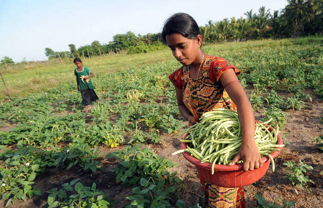

Innovación para el Futuro de la Agricultura
Explora cómo las tecnologías digitales están revolucionando el agro para hacerlo más sostenible, eficiente y rentable.

Juan Pérez
Juan ha implementado soluciones IoT para monitorear sus cultivos y mejorar la productividad de su granja en la región sur.

María García
María utiliza drones para el monitoreo de sus campos, lo que le ha permitido optimizar el uso de fertilizantes y agua en su plantación.
Carlos Martínez
Carlos es pionero en el uso de Big Data para la toma de decisiones agrícolas, lo que ha aumentado su productividad significativamente.